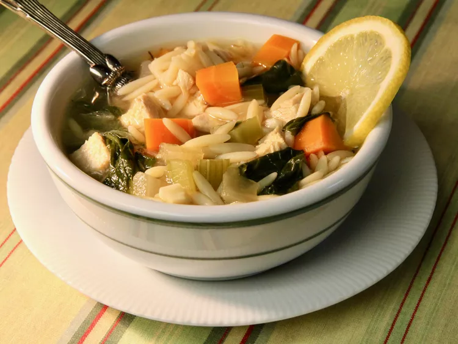

Burger
Best Burger Ever

This lemon chicken orzo soup is comfort in a bowl. It is so flavorful with tender pieces of chicken in a lemony broth with orzo pasta, carrots, onions, celery, and baby spinach. This has quickly become one of my family's favorite soup recipes.
Ingredients
- Boil and drain 8 ounces of orzo pasta.
- Cook the vegetables in a teaspoon of olive oil.
- This veggie-packed soup features onion, carrots, celery, and baby spinach.
- Season the soup with fresh garlic, dried thyme, dried oregano, salt and pepper, and a bay leaf.
- You’ll need fresh lemon juice, the zest of a lemon, and lemon slices for garnish.
- This soup is a great way to use leftover cooked chicken or rotisserie chicken.
- 3 fourth rolled oats
Directions
Step 1
Preheat an outdoor grill for medium high heat and lightly oil grate
Step 2
In a large bowl, combine the beef, onion soup mix, egg, hot sauce and oats. Shape into 6 patties.
Step 3
Grill Patties over medium high heat for 10 to 20 minutes, or to desired doneness